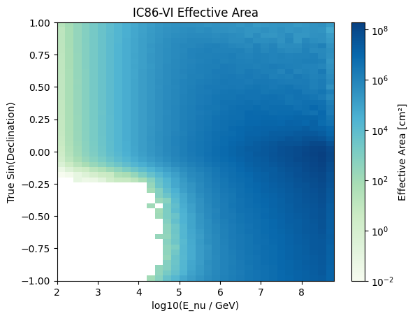

Smearing Matrix and Effective Area
The tutorial shows how to access instrument response functions in the form of smearing matrices and effective areas from IceCube 14-year public data release using SkyLLH.
[1]:
import numpy as np
from matplotlib import pyplot as plt
from matplotlib.colors import LogNorm
import scipy.stats
import sys
sys.path.append("/Users/amithan/skyllh_14/skyllh")
Here we start by importing the helper class PDSmearingMatrix. This class provides the user all the necessary tools to be able to access the smearing matrix realted to the chosen detector configuration.
[2]:
from skyllh.analyses.i3.publicdata_ps.smearing_matrix import PDSmearingMatrix
[25]:
help(PDSmearingMatrix)
Help on class PDSmearingMatrix in module skyllh.analyses.i3.publicdata_ps.smearing_matrix:
class PDSmearingMatrix(builtins.object)
| PDSmearingMatrix(pathfilenames, **kwargs)
|
| This class is a helper class for dealing with the smearing matrix
| provided by the public data.
|
| Methods defined here:
|
| __init__(self, pathfilenames, **kwargs)
| Creates a smearing matrix instance by loading the smearing matrix
| from the given file.
|
| get_ang_err_idx(self, true_e_idx, true_dec_idx, reco_e_idx, psi_idx, ang_err)
| Returns the bin index for the given angular error value given the
| true energy, true declination, reco energy, and psi bin indices.
|
| Parameters
| ----------
| true_e_idx : int
| The index of the true energy bin.
| true_dec_idx : int
| The index of the true declination bin.
| reco_e_idx : int
| The index of the reco energy bin.
| psi_idx : int
| The index of the psi bin.
| ang_err : float
| The angular error value in radians for which the bin index should
| get returned.
|
| Returns
| -------
| ang_err_idx : int | None
| The index of the angular error bin the given angular error value
| falls into. It returns None if the value is out of range.
|
| get_ang_err_pdf(self, log_true_e_idx, dec_idx, log_e_idx, psi_idx)
| Retrieves the angular error PDF from the given true energy bin index,
| the source bin index, the log_e bin index, and the psi bin index.
| Returns (None, None, None, None) if any of the bin indices are less then
| zero, or if the sum of all pdf bins is zero.
|
| Parameters
| ----------
| log_true_e_idx : int
| The index of the true energy bin.
| dec_idx : int
| The index of the declination bin.
| log_e_idx : int
| The index of the log_e bin.
| psi_idx : int
| The index of the psi bin.
|
| Returns
| -------
| pdf : 1d ndarray
| The ang_err pdf values.
| lower_bin_edges : 1d ndarray
| The lower bin edges of the ang_err pdf histogram.
| upper_bin_edges : 1d ndarray
| The upper bin edges of the ang_err pdf histogram.
| bin_widths : 1d ndarray
| The bin widths of the ang_err pdf histogram.
|
| get_log10_true_e_idx(self, log10_true_e)
| Returns the bin index for the given true log10 energy value.
|
| Parameters
| ----------
| log10_true_e : float
| The log10 value of the true energy.
|
| Returns
| -------
| log10_true_e_idx : int
| The index of the true log10 energy bin for the given log10 true
| energy value.
|
| get_log_e_pdf(self, log_true_e_idx, dec_idx)
| Retrieves the log_e PDF from the given true energy bin index and
| source bin index.
| Returns (None, None, None, None) if any of the bin indices are less then
| zero, or if the sum of all pdf bins is zero.
|
| Parameters
| ----------
| log_true_e_idx : int
| The index of the true energy bin.
| dec_idx : int
| The index of the declination bin.
|
| Returns
| -------
| pdf : 1d ndarray
| The log_e pdf values.
| lower_bin_edges : 1d ndarray
| The lower bin edges of the energy pdf histogram.
| upper_bin_edges : 1d ndarray
| The upper bin edges of the energy pdf histogram.
| bin_widths : 1d ndarray
| The bin widths of the energy pdf histogram.
|
| get_psi_idx(self, true_e_idx, true_dec_idx, reco_e_idx, psi)
| Returns the bin index for the given psi value given the
| true energy, true declination and reco energy bin indices.
|
| Parameters
| ----------
| true_e_idx : int
| The index of the true energy bin.
| true_dec_idx : int
| The index of the true declination bin.
| reco_e_idx : int
| The index of the reco energy bin.
| psi : float
| The psi value in radians for which the bin index should get
| returned.
|
| Returns
| -------
| psi_idx : int | None
| The index of the psi bin the given psi value falls into.
| It returns None if the value is out of range.
|
| get_psi_pdf(self, log_true_e_idx, dec_idx, log_e_idx)
| Retrieves the psi PDF from the given true energy bin index, the
| source bin index, and the log_e bin index.
| Returns (None, None, None, None) if any of the bin indices are less then
| zero, or if the sum of all pdf bins is zero.
|
| Parameters
| ----------
| log_true_e_idx : int
| The index of the true energy bin.
| dec_idx : int
| The index of the declination bin.
| log_e_idx : int
| The index of the log_e bin.
|
| Returns
| -------
| pdf : 1d ndarray
| The psi pdf values.
| lower_bin_edges : 1d ndarray
| The lower bin edges of the psi pdf histogram.
| upper_bin_edges : 1d ndarray
| The upper bin edges of the psi pdf histogram.
| bin_widths : 1d ndarray
| The bin widths of the psi pdf histogram.
|
| get_reco_e_idx(self, true_e_idx, true_dec_idx, reco_e)
| Returns the bin index for the given reco energy value given the
| given true energy and true declination bin indices.
|
| Parameters
| ----------
| true_e_idx : int
| The index of the true energy bin.
| true_dec_idx : int
| The index of the true declination bin.
| reco_e : float
| The reco energy value for which the bin index should get returned.
|
| Returns
| -------
| reco_e_idx : int | None
| The index of the reco energy bin the given reco energy value falls
| into. It returns None if the value is out of range.
|
| get_true_dec_idx(self, true_dec)
| Returns the true declination index for the given true declination
| value.
|
| Parameters
| ----------
| true_dec : float
| The true declination value in radians.
|
| Returns
| -------
| true_dec_idx : int
| The index of the declination bin for the given declination value.
|
| get_true_log_e_range_with_valid_log_e_pdfs(self, dec_idx)
| Determines the true log energy range for which log_e PDFs are
| available for the given declination bin.
|
| Parameters
| ----------
| dec_idx : int
| The declination bin index.
|
| Returns
| -------
| min_log_true_e : float
| The minimum true log energy value.
| max_log_true_e : float
| The maximum true log energy value.
|
| sample_ang_err(self, rss, dec_idx, log_true_e_idxs, log_e_idxs, psi_idxs)
| Samples ang_err values for the given source declination, true
| energy bins, log_e bins, and psi bins.
|
| Parameters
| ----------
| rss : instance of RandomStateService
| The RandomStateService which should be used for drawing random
| numbers from.
| dec_idx : int
| The index of the source declination bin.
| log_true_e_idxs : 1d ndarray of int
| The bin indices of the true energy bins.
| log_e_idxs : 1d ndarray of int
| The bin indices of the log_e bins.
| psi_idxs : 1d ndarray of int
| The bin indices of the psi bins.
|
| Returns
| -------
| ang_err_idx : 1d ndarray of int
| The bin indices of the angular error pdf corresponding to the
| sampled angular error values.
| ang_err : 1d ndarray of float
| The sampled angular error values in radians.
|
| sample_log_e(self, rss, dec_idx, log_true_e_idxs)
| Samples log energy values for the given source declination and true
| energy bins.
|
| Parameters
| ----------
| rss : instance of RandomStateService
| The RandomStateService which should be used for drawing random
| numbers from.
| dec_idx : int
| The index of the source declination bin.
| log_true_e_idxs : 1d ndarray of int
| The bin indices of the true energy bins.
|
| Returns
| -------
| log_e_idx : 1d ndarray of int
| The bin indices of the log_e pdf corresponding to the sampled
| log_e values.
| log_e : 1d ndarray of float
| The sampled log_e values.
|
| sample_psi(self, rss, dec_idx, log_true_e_idxs, log_e_idxs)
| Samples psi values for the given source declination, true
| energy bins, and log_e bins.
|
| Parameters
| ----------
| rss : instance of RandomStateService
| The RandomStateService which should be used for drawing random
| numbers from.
| dec_idx : int
| The index of the source declination bin.
| log_true_e_idxs : 1d ndarray of int
| The bin indices of the true energy bins.
| log_e_idxs : 1d ndarray of int
| The bin indices of the log_e bins.
|
| Returns
| -------
| psi_idx : 1d ndarray of int
| The bin indices of the psi pdf corresponding to the sampled psi
| values.
| psi : 1d ndarray of float
| The sampled psi values in radians.
|
| ----------------------------------------------------------------------
| Readonly properties defined here:
|
| log10_reco_e_binedges_lower
| (read-only) The upper bin edges of the log10 reco energy axes.
|
| log10_reco_e_binedges_upper
| (read-only) The upper bin edges of the log10 reco energy axes.
|
| log10_true_enu_binedges
| (read-only) The (n_log10_true_enu+1,)-shaped 1D numpy ndarray holding
| the bin edges of the log10 true neutrino energy.
|
| max_log10_psi
| (read-only) The maximum log10 value of the psi axis.
|
| max_log10_reco_e
| (read-only) The maximum value of the reconstructed energy axis.
|
| min_log10_psi
| (read-only) The minimum log10 value of the psi axis.
|
| min_log10_reco_e
| (read-only) The minimum value of the reconstructed energy axis.
|
| n_log10_true_e_bins
| (read-only) The number of log10 true energy bins.
|
| n_true_dec_bins
| (read-only) The number of true declination bins.
|
| pdf
| (read-only) The probability-density-function
| P(E_reco,psi,ang_err|E_nu,dec_nu), which, by definition, is the
| histogram property divided by the 3D bin volumes for E_reco, psi, and
| ang_err.
|
| true_dec_bin_centers
| (read-only) The (n_true_dec,)-shaped 1D ndarray holding the bin
| center values of the true declination.
|
| true_dec_bin_edges
| (read-only) The (n_true_dec+1,)-shaped 1D numpy ndarray holding the
| bin edges of the true declination.
|
| true_e_bin_centers
| (read-only) The (n_true_e,)-shaped 1D numpy ndarray holding the bin
| center values of the true energy.
|
| true_e_bin_edges
| (read-only) The (n_true_e+1,)-shaped 1D numpy ndarray holding the
| bin edges of the true energy.
|
| Depricated! Use log10_true_enu_binedges instead!
|
| ----------------------------------------------------------------------
| Data descriptors defined here:
|
| __dict__
| dictionary for instance variables (if defined)
|
| __weakref__
| list of weak references to the object (if defined)
As input, the filepath to the respective smearing data file provided in the public release needs to be entered. Here in this example, the smearing file for the IC86-VI is chosen. But the same steps can be used to retrieve the smearing matrices for the rest of the smearing data files.
[3]:
smearing_matrix = PDSmearingMatrix(
'/Users/amithan/Downloads/PublicData_14y/irfs/IC86_VI_smearing.csv'
)
Some of the useful objects of the PDSmearingMatrix that can be readily used, are
smearing_matrix.histogram– Returns a 5d histogram array holding the probability values of the smearing matrix. The axes are (true_energy, true_declination, reco_energy, psi, angular_error)smearing_matrix.pdf– Returns The probability-density-function P(E_reco,psi,ang_err|E_nu,dec_nu), which, by definition, is the histogram property divided by the 3D bin volumes for E_reco, psi, and ang_err.
[ ]:
recon_probs = smearing_matrix.histogram.sum(axis=(0,1))
To access the Effective area, from the Public Data, the class PDAeff can be used. This creates an effective area instance by loading the effective area data from the given file.
[6]:
from skyllh.analyses.i3.publicdata_ps.aeff import PDAeff
[24]:
help(PDAeff)
Help on class PDAeff in module skyllh.analyses.i3.publicdata_ps.aeff:
class PDAeff(builtins.object)
| PDAeff(pathfilenames, src_dec=None, min_log10enu=None, max_log10enu=None, **kwargs)
|
| This class provides a representation of the effective area provided by
| the public data.
|
| Methods defined here:
|
| __init__(self, pathfilenames, src_dec=None, min_log10enu=None, max_log10enu=None, **kwargs)
| Creates an effective area instance by loading the effective area
| data from the given file.
|
| Parameters
| ----------
| pathfilenames : str | list of str
| The path file names of the effective area data file(s) which should
| be used for this public data effective area instance.
| src_dec : float | None
| The source declination in radians for which detection probabilities
| should get pre-calculated using the ``get_detection_prob_for_decnu``
| method.
| min_log10enu : float | None
| The minimum log10(E_nu/GeV) value that should be used for
| calculating the detection probability.
| If None, the lowest available neutrino energy bin edge of the
| effective area is used.
| max_log10enu : float | None
| The maximum log10(E_nu/GeV) value that should be used for
| calculating the detection probability.
| If None, the highest available neutrino energy bin edge of the
| effective area is used.
|
| create_sin_decnu_log10_enu_spline(self)
| DEPRECATED!
| Creates a FctSpline2D object representing a 2D spline of the
| effective area in sin(dec_nu)-log10(E_nu/GeV)-space.
|
| Returns
| -------
| spl : FctSpline2D instance
| The FctSpline2D instance representing a spline in the
| sin(dec_nu)-log10(E_nu/GeV)-space.
|
| get_aeff_for_decnu(self, decnu)
| Retrieves the effective area as function of log10_enu.
|
| Parameters
| ----------
| decnu : float
| The true neutrino declination.
|
| Returns
| -------
| aeff : (n,)-shaped numpy ndarray
| The effective area in cm^2 for the given true neutrino declination
| as a function of log10 true neutrino energy.
|
| get_detection_prob_for_decnu(self, decnu, enu_min, enu_max, enu_range_min, enu_range_max)
| Calculates the detection probability for given true neutrino energy
| ranges for a given neutrino declination.
|
| Parameters
| ----------
| decnu : float
| The neutrino declination in radians.
| enu_min : float | ndarray of float
| The minimum energy in GeV.
| enu_max : float | ndarray of float
| The maximum energy in GeV.
| enu_range_min : float
| The minimum energy in GeV of the entire energy range.
| enu_range_max : float
| The maximum energy in GeV of the entire energy range.
|
| Returns
| -------
| det_prob : ndarray of float
| The neutrino energy detection probabilities for the given true
| enegry ranges.
|
| ----------------------------------------------------------------------
| Readonly properties defined here:
|
| aeff_decnu_log10enu
| (read-only) The effective area in cm^2 as (n_decnu,n_log10enu)-shaped
| 2D numpy ndarray.
|
| decnu_bincenters
| (read-only) The bin center values of the neutrino declination axis in
| radians.
|
| decnu_binedges
| (read-only) The bin edges of the neutrino declination axis in
| radians.
|
| log10_enu_bincenters
| (read-only) The bin center values of the log10(E_nu/GeV) neutrino
| energy axis.
|
| log10_enu_binedges
| (read-only) The bin edges of the log10(E_nu/GeV) neutrino energy
| axis.
|
| log10_enu_binedges_lower
| (read-only) The lower binedges of the log10(E_nu/GeV) neutrino energy
| axis.
|
| log10_enu_binedges_upper
| (read-only) The upper binedges of the log10(E_nu/GeV) neutrino energy
| axis.
|
| n_decnu_bins
| (read-only) The number of bins of the neutrino declination axis.
|
| n_log10_enu_bins
| (read-only) The number of bins of the log10 neutrino energy axis.
|
| sin_decnu_binedges
| (read-only) The sin of the bin edges of the neutrino declination
| in radians.
|
| ----------------------------------------------------------------------
| Data descriptors defined here:
|
| __dict__
| dictionary for instance variables (if defined)
|
| __weakref__
| list of weak references to the object (if defined)
As inputs the class PDAeff takes,
The filepath of the effective area data file provided in the public data. Here in this example, the eefective area file for the IC86-VI is chosen. But the same steps can be used to access thr effective areas for the rest of the data files.
Source declination in radians. For this example, NGC 1068 is the chosen source.
Minimum log10 neutrino energy. If None, the lowest available neutrino energy bin edge of the effective area is used.
Maximum log10 neutrino energy. If None, the highest available neutrino energy bin edge of the effective area is used.
[8]:
src_ra = 40.67 # degrees
src_dec = -0.01 # degrees
effective_area = PDAeff(
'/Users/amithan/Downloads/PublicData_14y/irfs/IC86_VI_effectiveArea.csv',
src_dec=np.radians(src_dec)
)
[9]:
dir(effective_area)
[9]:
['__class__',
'__delattr__',
'__dict__',
'__dir__',
'__doc__',
'__eq__',
'__format__',
'__ge__',
'__getattribute__',
'__gt__',
'__hash__',
'__init__',
'__init_subclass__',
'__le__',
'__lt__',
'__module__',
'__ne__',
'__new__',
'__reduce__',
'__reduce_ex__',
'__repr__',
'__setattr__',
'__sizeof__',
'__str__',
'__subclasshook__',
'__weakref__',
'_aeff_decnu_log10enu',
'_decnu_binedges',
'_decnu_binedges_lower',
'_decnu_binedges_upper',
'_log10_enu_binedges',
'_log10_enu_binedges_lower',
'_log10_enu_binedges_upper',
'aeff_decnu_log10enu',
'create_sin_decnu_log10_enu_spline',
'decnu_bincenters',
'decnu_binedges',
'det_prob',
'get_aeff_for_decnu',
'get_detection_prob_for_decnu',
'log10_enu_bincenters',
'log10_enu_binedges',
'log10_enu_binedges_lower',
'log10_enu_binedges_upper',
'n_decnu_bins',
'n_log10_enu_bins',
'sin_decnu_binedges']
Some useful objects of the class PDAeff class are
effective_area.sin_decnu_binedges returns the sin of the bin edges of the neutrino declination in radians.
[26]:
sin_nu_dec = effective_area.sin_decnu_binedges
effective_area.log10_enu_binedges returns the bin edges of the log10(E_nu/GeV) neutrino energy axis.
[11]:
log_10_enu_edges = effective_area.log10_enu_binedges
effective_area.log10_enu_bincenters returns the bin center values of the log10(E_nu/GeV) neutrino energy axis.
[12]:
log_10_enu = effective_area.log10_enu_bincenters
[27]:
enu = np.power(10, log_10_enu)
effective_area.decnu_bincenters returns the bin center values of the neutrino declination axis in radians.
[14]:
nu_dec = effective_area.decnu_bincenters
effective_area.get_aeff_for_decnu returns the effective area as a function of log10 neutrino energy, given the input of neutrino declination.
[15]:
eff_area = np.array([ effective_area.get_aeff_for_decnu(i)
for i in nu_dec
])
[19]:
plt.pcolormesh(log_10_enu_edges, sin_nu_dec, eff_area, cmap='GnBu', norm=LogNorm())
plt.title('IC86-VI Effective Area')
plt.colorbar(label='Effective Area [cm²]')
plt.xlabel('log10(E_nu / GeV)')
plt.ylabel('True Sin(Declination)')
plt.show()

effective_area.get_detection_prob_for_decnu returns the detection probability for each neutrino declination for a certain given true energy range.
[17]:
detection_prob = np.array([ effective_area.get_detection_prob_for_decnu(i, enu[0], enu[10],enu[0], enu[-1])
for i in nu_dec
])
[ ]: